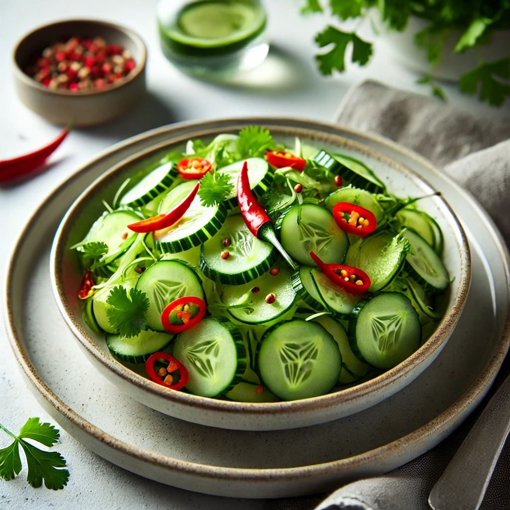

Home
Cucumber Salad

Description
Cucumber salad is a refreshing and light salad that pairs perfectly as a side dish with many meals.
The combination of crunchy cucumbers and a tangy dressing makes it a favorite in summer cuisine.
Ingredients
- Cucumbers
- Salt
- Vinegar
- Oil
- Pepper
Steps
- Peel the cucumbers and slice them.
- Sprinkle with salt and let sit for 30 minutes.
- Drain the water and mix the cucumbers with vinegar, oil, and pepper.